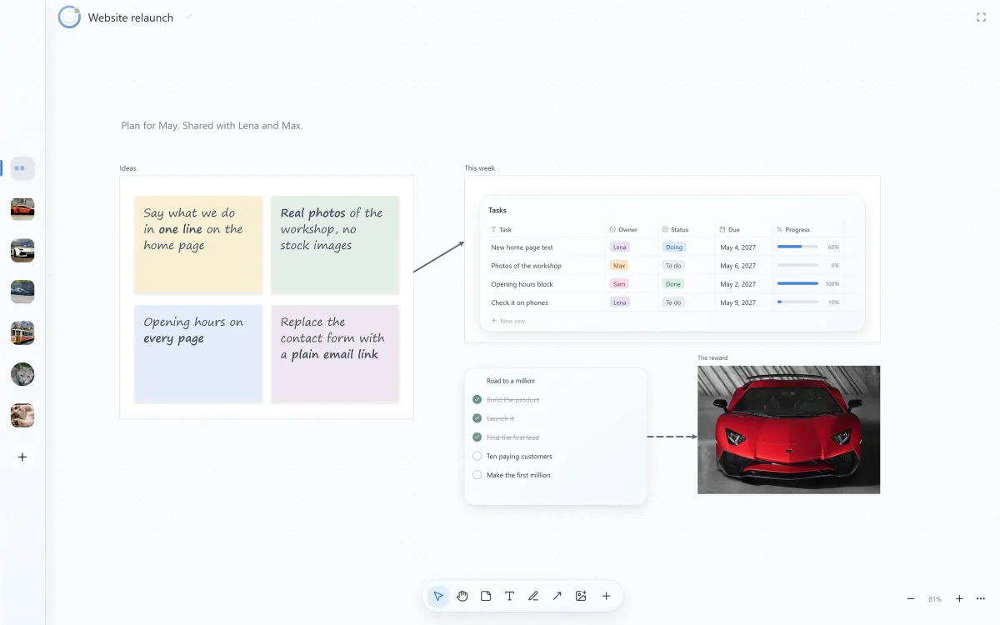
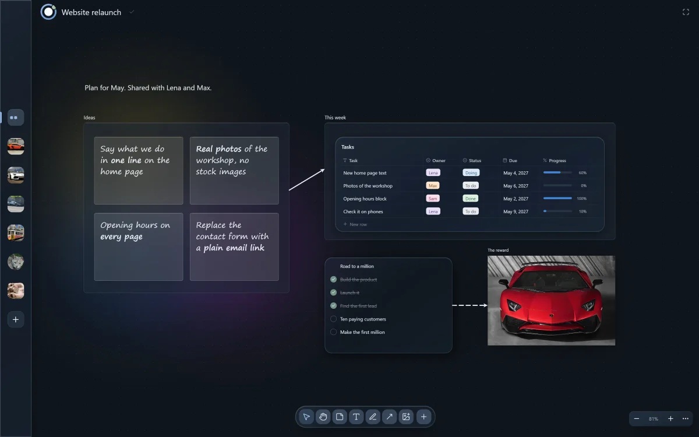
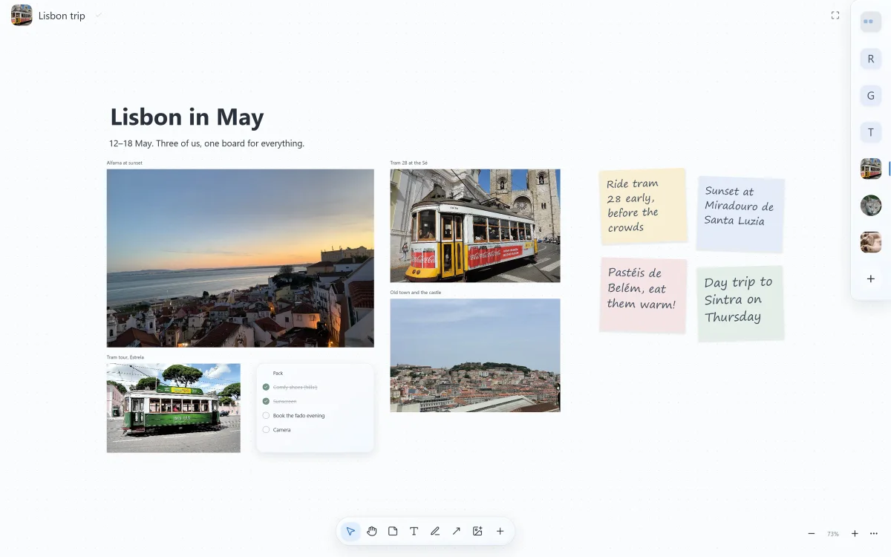
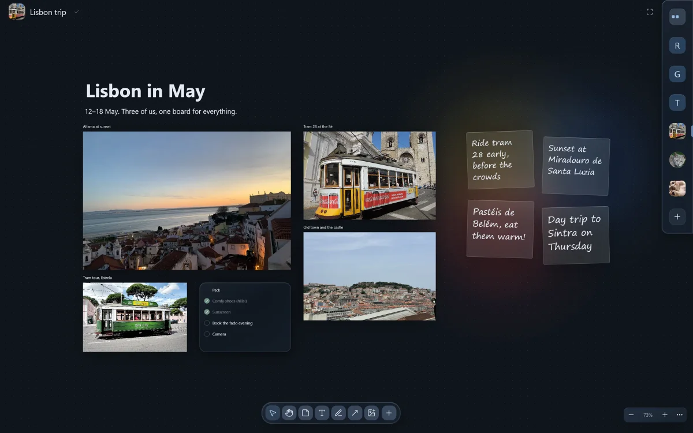

Your whole project on one board.
A free whiteboard for Windows. Notes, images, PDFs, tables and freehand ink on one infinite canvas. Works offline, and your files stay yours.
Download for WindowsThe app is free forever · No account · Windows 10 and 11 · Linux (beta)
On a phone? Terra Board runs on Windows and Linux PCs. Open this page on your computer to download it.


Everything in one place.
Drop in images, PDFs, links and videos. Add notes, tables with owners and due dates, checklists and frames. Zoom out to see the whole project, zoom in to work.


Draw like on paper.
A smooth freehand pen and a highlighter. Sketch an idea, circle what matters, mark up a screenshot or a PDF page.
Your AI works right on the board.
Terra has a built-in MCP server. Switch it on and Claude, Codex or any other MCP app on your PC can read your boards and build on them: notes, tables, picture cards, even live web pages. Ask for a grammar map, get one.
Runs on your PC, off until you switch it on.
Artículos
| masculino | femenino | |
|---|---|---|
| the | el libro | la casa |
| the (pl.) | los libros | las casas |
| a / an | un libro | una casa |
Pretérito indefinido
| hablar | comer | vivir | |
|---|---|---|---|
| yo | hablé | comí | viví |
| tú | hablaste | comiste | viviste |
| él | habló | comió | vivió |
Futuro y condicional
| futuro | condicional | |
|---|---|---|
| yo | hablaré | hablaría |
| tú | hablarás | hablarías |
| ellos | hablarán | hablarían |
Ser y estar
| ser | estar |
|---|---|
| Soy Ana. | Estoy en casa. |
| Es médica. | Está cansado. |
| Somos de Lima. | Estamos bien. |
Done: 4 branches, 19 cards.
Work on it together, live.
Share a board over Wi-Fi or the cloud. See everyone's cursor move, follow a colleague's view, and pick up where they left off.
Private by default.
Your boards are files on your PC. No sign-up, no analytics or tracking of our own, and the cloud stays off until you want it. Privacy policy
Terra for your company.
Run your own Terra sync server and keep shared boards inside your company network. IT can preset the server on every PC, or lock it.
Early days: company accounts and sign-in are still being built, so for now keep the server behind your VPN. How self-hosting works today
Interested for your company? Get in touchStart your first board in a minute.
Download for WindowsFree for Windows · Updates itself · Open source · Also for Linux (beta)